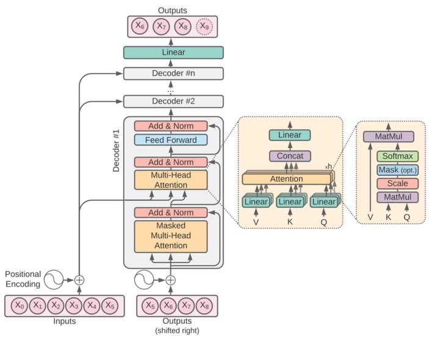

Transformer (Neural Network)
The Transformer model is a foundational architecture in NLP and has influenced various other domains. It was introduced in the 2017 paper "Attention is All You Need". It is built upon the concept of Attention that was introduced in another paper 3 years earlier.
Modern LLMs are based on a transformer architecture, which allows them to process and generate text efficiently. Transformers use mechanisms like self-attention to weigh the importance of different words in a sentence, enabling them to capture context better than previous models.
Key features of Transformers:
- Self-Attention Mechanism: Can capture contextual relationships
- Parallelization: Can process entire sequences of data simultaneously
- Positional Encoding: Provide information about position of each word in input
- Encoder-Decoder Structure: Layers of self-attention and feed-forward NNs
- Scalability: Can be scaled up effectively
Attention is a brilliant (data-dependent) weighted average operation. It is a form of global pooling, a reduction, communication. It is a way to aggregate relevant information from multiple nodes (tokens, image patches, or etc.). It is expressive, powerful, has plenty of parallelism, and is efficiently optimizable.
– Andrej Karpathy
Diagram
